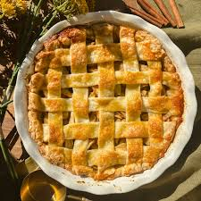

Apple Pie

Description
Apple pie is a timeless dessert made with tender apples, warm spices,
and a flaky crust. It's a comforting classic that's perfect for holidays,
family gatherings, or anytime you want a homemade treat. This recipe
focuses on simple ingredients and straightforward steps, making it
approachable even for beginners. Served warm, apple pie is especially
delicious with ice cream or whipped cream.
Ingredients
- Pie crust (top and bottom)
- Apples
- Granulated sugar
- Brown sugar
- All-purpose flour
- Ground cinnamon
- Ground nutmeg
- Lemon juice
- Unsalted butter
Steps
- Preheat the oven and prepare a pie dish.
- Peel, core, and slice the apples.
- Mix the apples with sugars, flour, spices, and lemon juice.
- Place the apple mixture into the bottom pie crust.
- Dot the filling with small pieces of butter.
- Cover with the top crust and seal the edges.
- Cut small slits in the top crust to allow steam to escape.
- Bake until the crust is golden brown.
- Remove from the oven and let the pie cool.
- Slice and serve.
Home